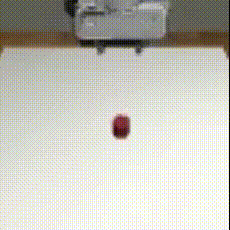
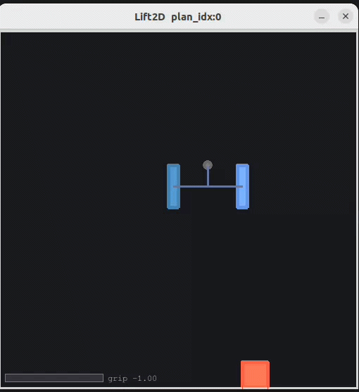
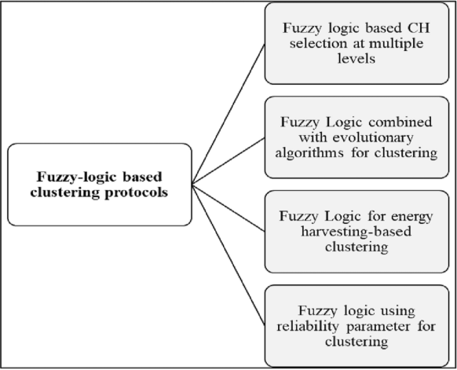
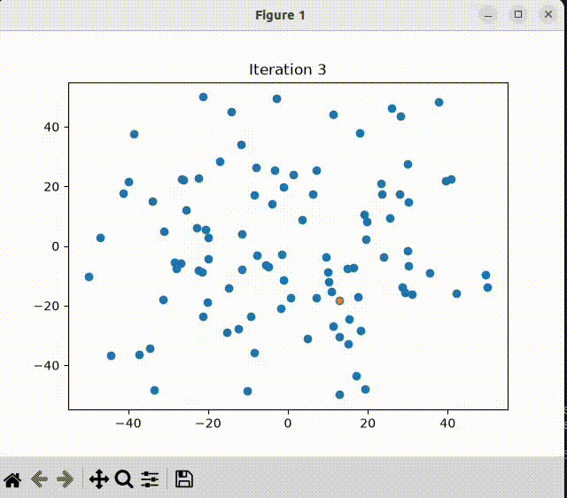
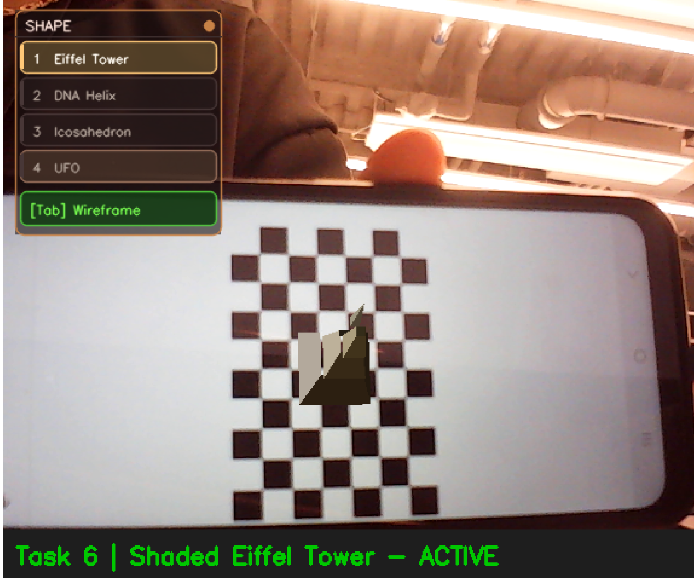
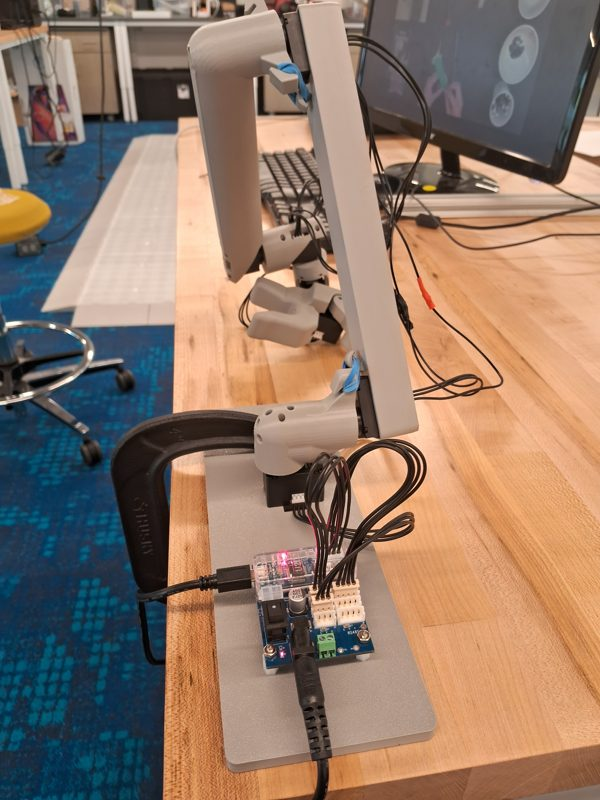
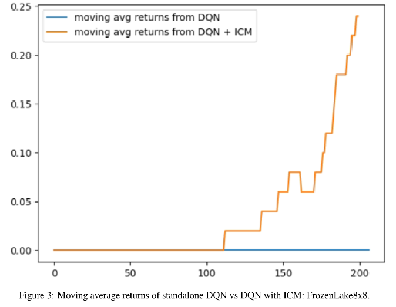
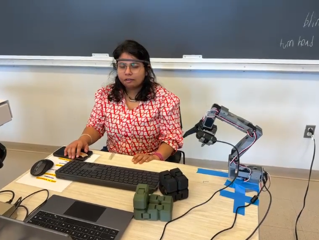
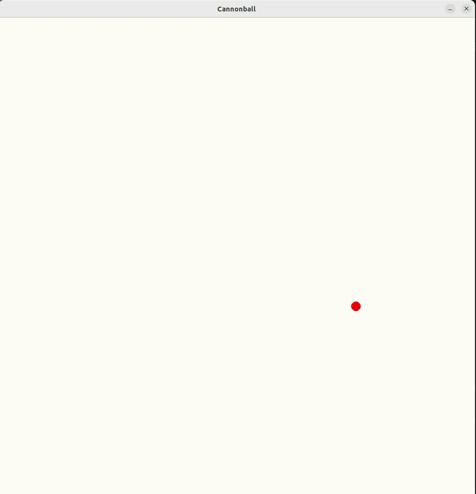

About
Hi, I'm an MS Robotics student at Northeastern University, working in the Helping Hands Lab with Prof. Robert Platt. Previously, I worked as an AI Product Analyst at Sprinklr and completed my B.Tech at NIT Jalandhar.
I am currently interested in developing robot learning algorithms for manipulation using diffusion policies and physics understanding. My current work introduces an attention-based masking encoder for Diffusion Policy that improves out-of-distribution success by 12.4% across 12 unseen YCB objects, integrating SAM3 at inference with no segmentation supervision during training.
My long-term goal is to enable manipulation policies that generalize zero-shot to novel objects, bridging the gap between narrow task-specific training and robust real-world deployment. I work across the full stack — building teleoperation hardware, custom simulation benchmarks, and training visuomotor policies in sim and real.
Feel free to reach out by email.
News
Research

Enhancing Diffusion Policy Generalization through Structured Visual Representations
An attention-based masking encoder (Attn-DP) trained end-to-end under BC loss, improving OOD generalization by 12.4% across 12 unseen YCB objects. Integrates frozen SAM3 at inference for zero-shot segmentation without fine-tuning. The Attention U-Net learns to suppress task-irrelevant background from imitation losses alone.

RoboMimic2D: Lightweight 2D Manipulation Benchmarks for Policy Learning
A Gymnasium-compatible 2D simulation benchmark mirroring RoboMimic's task structure. Physics-based grasping via Pymunk with a gripper state machine — grip force computed from friction coefficients, not hardcoded. Zarr-backed episodic replay buffer for imitation learning data collection.

Fuzzy-based Techniques for Clustering in Wireless Sensor Networks

Artificial Electric Field Algorithm: A Python Package for Global Optimization
A pip-installable Python package implementing the Artificial Electric Field optimization algorithm. Converges to global minima/maxima for multi-dimensional, non-linear problems with 2D convergence visualization.
Projects

Augmented Reality C++ Pipeline
Real-time AR in C++ with dynamic camera calibration, markerless target tracking via ORB feature matching and RANSAC homography, and an OpenGL/GLFW rendering pipeline for shaded 3D geometry overlays on live video.

GELLO Teleoperation & Real-Robot Data Collection
Built a GELLO teleoperation device from scratch for UR5 arm demonstration collection. Reproduced Diffusion Policy baselines across RoboMimic and RoboCasa benchmarks. Benchmarked UNet, ViT, and foundation-model visual encoders (DINO, SAM, VLMs) for manipulation policy learning.

No-Reward Long-Horizon Planning with Latent World Models
Intrinsic Curiosity Module (ICM) with Deep Q-Network for sparse-reward environments. 75% success rate increase over vanilla DQN on long-horizon FrozenLake env.

Brain-Controlled Robot Arm via EEG Calibration
Controlling a Hugging Face Lerobot arm using a Muse 2 EEG headset by Interaxon. A simple blink translates into physical movement — with zero data collection, zero fine-tuning, and zero pretrained models. Specific facial movements are tied to specific robot joint movements in this project. The setup relies entirely on pure device calibration mapped directly to brain signals, taking only seconds to set up.

Physics Simulations with Pymunk & Pygame
A collection of 2D physics simulations with dual implementations: raw numpy and Pymunk-backed. Documented in a three-part technical blog series.
Experience
Graduate Research Assistant
Feb 2025 – PresentDeveloping novel vision encoders for Diffusion Policy to improve OOD generalization. Built a GELLO teleoperation system for UR5 data collection. Created RoboMimic2D, a Gymnasium-based 2D manipulation benchmark.
Teaching Assistant — Mobile Robotics
Sep 2025 – Dec 2025EECE5550: Perception, localization, and control. TurtleBot3 hardware deployment.
AI Product Analyst
Jul 2022 – Jan 2023Reduced manual content moderation by 93% via regex-based automation across 200+ social channels. Managed 15+ global clients and executed 40+ data insight dashboards.
Research Intern
Jul 2021 – Oct 2021Published a pip-installable Python package for 'Artificial Electric Field,' a novel optimization algorithm for multi-dimensional, non-linear problems.
Education
MS Robotics
Sep 2024 – May 2026Computer Vision, Reinforcement Learning, Geometrical Deep Learning, Mobile Robotics.
B.Tech
Aug 2018 – May 2022Soft Computing, Mechatronics, Data Structures.